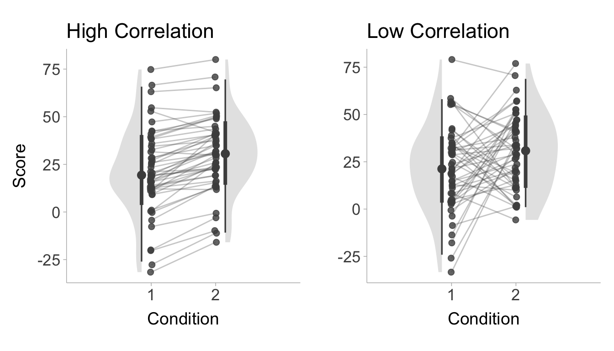
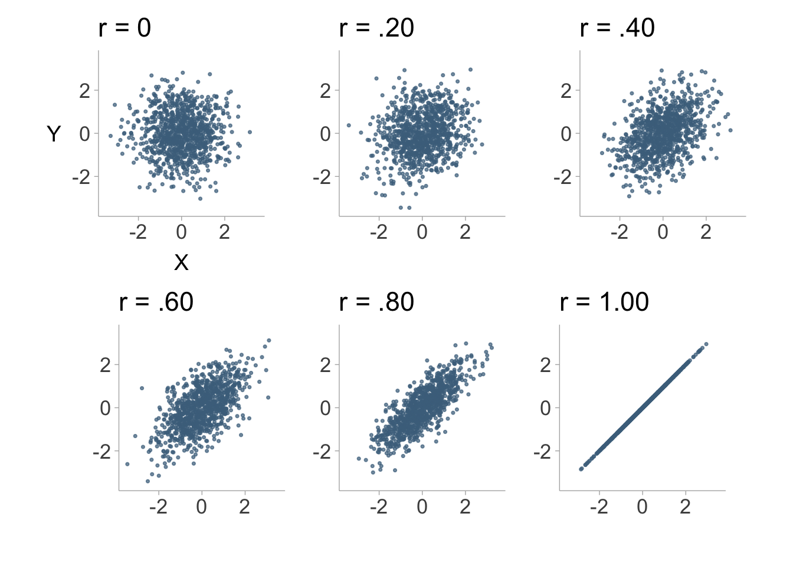

This effect sizes and confidence intervals collaborative guide aims to provide students and early-career researchers with hands-on, step-by-step instructions for calculating effect sizes and confidence intervals for common statistical tests used in psychology, social sciences and behavioral sciences, particularly when original data are not available and when reported information is incomplete. It also introduces general background information on effect sizes and confidence intervals, as well as useful R packages for their calculation. Many of the methods and procedures described in this Guide are based on R or R-based Shiny Apps developed by the science community. We were motivated to focus on R as we aim to maximize the reproducibility of our research outcomes and encourage the most reproducible study planning and data analysis workflow, though we also document other methods whenever possible for the reference of our readers. We regularly update this open educational resource, as packages are updated frequently and new packages are developed from time to time in this rapidly changing Open Scholarship era.
All are encouraged to contribute to this Guide. Please note that this Guide is in continuous development such that it will remain a work in progress for an indefinite period of time. This is intended because we hope the Guide to always reflect the state of the art on the topics of effect sizes and confidence intervals.
Notes
Please use the headings and style as set forth in this document. You can use keyboard shortcuts such as Ctrl + Alt + 1/2/3. The normal text is in Times New Roman font, font size 11. The codes are formatted using the Code Blocks add-on of Google Docs, github theme, font size 8.
Use the Suggesting mode rather than the Editing mode. Suggesting is now the default mode for this document. Therefore, please do not hesitate to correct mistakes or modify the contents directly.
Add a comment to the document if you find anything missing or improper, or if you feel that things are better organized in a different way. We appreciate your suggestions. If you have any questions, please also add a comment. We will reply and seek to clarify in the document body.
Please make proper citations (in APA 7th format) and provide relevant links when you refer to any source that is not your own.
Credit and authorship
If you believe you have made sufficient contribution that qualifies you as an author, and you would like to be listed as an author of this Guide, please do not hesitate and list your name and contact information below. The administrators (Q.-Y. X., S. K. Y., and G. F.) of this Guide will verify your contribution and add you to the author list. We welcome comments from any person, regardless of whether they want to be an author. You are also welcome to request content to be added to this Guide (please see the Things to add to the guide section in the end).
The authorship order is such that Q.-Y. X. and S. K. Y. will be the first two authors and G. F. will be the last and the corresponding author. All other contributors will be listed alphabetically in the middle and are all considered joint third authors. Contributors are by default given investigation, writing - original draft, and writing - review & editing CRediT authorship roles. It is possible to take on more roles if contributors prefer. Any change in this authorship order rule will have to be approved by all who are already listed as an author.
Evaluating and Interpreting Confidence Intervals
Effect sizes quantify the magnitude of effects (i.e., strength of a relationship, size of a difference), which are the outcomes of our empirical research. Effect sizes are by no means a new concept. However, reporting them remained largely optional for many years, and only until recently does it become a community standard: scientists now see reporting effect sizes (in addition to the traditional statistical significance) as a must and journals also start to require such reporting. Notably, in 2001 and 2010, The Publication Manual of the American Psychological Association 5th and 6th editions emphasized that it is “almost always necessary”1 to report effect sizes (Association 2010, 34; see Fritz, Morris, and Richler 2012, which provides a comprehensive summary on history and importance of effect size reporting).
Effects sizes can be grouped in broad categories as (1) raw effect sizes, and (2) standardized effect sizes. The raw effect sizes are summary of the results that are expressed in the same units as the raw data. For example, when kilograms are measured, a raw effect size reports a measure in kilogram. Consider the effect of a diet on a treatment group; a control group receives no diet. The change in weight can be expressed as the mean difference between the group. This measure is also in kg and so is a raw effect size. Standardized effect sizes are expressed on a standardized scale which has no longer any unit but which have a universal interpretation. A z score is an example of a standardized measure. This document is concerned exclusively on standardized effect sizes.
Benchmarks
What makes an effect size “large” or “small” is completely dependent on the context of the study in question. However, it can be useful to have some loose criterion in order to guide researchers in effectively communicating effect size estimates. Jacob Cohen (1988), the pioneer of estimation statistics, suggested many conventional benchmarks (i.e., how we refer to an effect size other than using a number) that we currently use. However, Cohen (1988) noted that labels such as “small”, “medium”, and “large” are relative, and in referring to the size of an effect, the discipline, the context of research, as well as the research method and goals, should take precedence over benchmarks any time it’s possible. There are general differences in effect sizes across different disciplines, and within each discipline, effect sizes differ depending on study designs and research methods (Schäfer and Schwarz 2019) and goals; as Glass, McGaw, and Smith (1981) explains:
Depending on what benefits can be achieved at what cost, an effect size of 2.0 might be “poor” and one of .1 might be “good.”
Therefore, it is crucial to recognize that benchmarks are only general guidelines, and importantly, out of context. They also are tend to attract controversy (Glass, McGaw, and Smith 1981; Kelley and Preacher 2012; Harrell 2020). Note that empirical benchmarks have been suggested by researchers. For social psychology, these alternative benchmarks obtained through meta-analyzing the literature (for example, this and this; see this Twitter thread for a summary) are typically smaller than what Cohen put forward. Please refer to the table below:
It should be noted that small/medium/large effects do not necessarily mean that they have small/medium/large practical implications (for details see, Coe 2012; Pogrow 2019). These benchmarks are more relevant for guiding our expectations. Whether they have practical importance depends on contexts. To assess practical importance, it will always be desirable for standardized effect sizes to be translated to increase/decrease in raw units (or any meaningful units) or a Binomial Effect Size Display (roughly, differences in proportions such as success rate before and after intervention).
Please also note that only zero means no effect. An effect of the size .01 is an effect, but a very small (Sawilowsky 2009), and likely unimportant, one. It makes sense to say that “we failed to find evidence for rejecting the null hypothesis,” or “we found evidence for only a small/little/weak-to-no effect” or “we did not find a meaningful effect”. It does not make sense to say, “we found no effect.” Purely by the random nature of our universe, it is hard to imagine that we can obtain a sharp zero-effect result. This is also related to the crud factor, which refers to the idea that “everything correlates with everything else” (Orben and Lakens 2020, 1; Meehl 1984), but the practical implication of very weak/small correlations between some variables may be limited, and whether the effect is reliably detected depends on statistical power.
Reporting Effect Sizes
Transparency
When reporting effect sizes and their calculations, you should prioritize transparency and reproducibility. No matter what tool you used to calculate your effect size (R is the most recommended tool here), you must make sure that others can easily follow your procedures and obtain the same results. This means that if you use online calculators (which is discouraged) or standalone programs (JAMOVI is most recommended; you can also use JASP, which however does not allow access to syntax at this moment), you should include screenshots that capture the input and output, with clear explanations. If you use R, Python or other programming languages, you should copy-and-paste your codes into your supplementary document (or submit your scripts to open online repositories), ideally with annotations and comments explaining the codes. inputs and outputs.
Directionality
Some effect sizes are directional (e.g., Cohen’s \(d\)), which means that they can be positive or negative. Their signs carry important information, and therefore cannot be omitted. When you report these effect sizes, make it clear what is compared to what (i.e., the direction of comparison). Better still, make sure your comparison is inline with the theory. For instance, a theory predicts that your group X should score higher on an item than your Group Y,7 you should hypothesize accordingly that Group X will have a higher mean than Group Y on the item, and subtract mean(Y) from mean(X) (rather than the other way around) to obtain the mean difference. You should then expect your \(t\) statistic to be positive, and your \(d\) value as well. In other words, avoid reporting anything like \(t\) = -5.14, \(d\) = 0.36, where the signs of the statistics do not match.
Precision
Effect sizes may be very precisely estimated from the available data, the used methodology, and how the population was sampled. It might also be estimated with little confidence on the resulting number. This may be the case for example when the sample is very small, when the population displays a lot of variability, when a between-group design is used instead of a paired-sample design, and finally, when clustered sampling is used instead of randomized sampling. Precision can be estimated using various tools, but probably the most commonly used one is the Confidence intervals. This interval has a confidence level, frequently 95%.
Interpreting Confidence Intervals
What is the correct interpretation of a confidence interval? Imagine you conducted a study where you compared two groups. You obtained a Cohen’s \(d\) = 0.3, 95% CI [0.2, 0.4]. How do you interpret this confidence interval?
Confidence intervals are yielded by a certain procedure, such that when the procedure is repeatedly applied to a series of hypothetical datasets drawn from the studied population/populations, it yields intervals that contain the true parameter value (in our example, it means the true difference between the two groups) in 95% of the cases.
In colloquial terms, if we conduct this research over and over (repeating the same sampling procedure, administering the same experimental manipulation, conducting the same statistical analysis, etc.), because of sampling variability (our samples are slightly different at each time), we will get different Cohen’s \(d\) values. For each of these \(d\) values, we calculate a 95% interval. Then, among all these many intervals, we expect that 95% of them will contain the true \(d\), which we never know exactly.
There is also a common criticism levied against the confidence interval interpretation: “There is a 95% probability that the true parameter exists within the 95% confidence interval”. However this criticism is unwarranted in the specific case of a single observed confidence interval, that is, as long as there is a single realized confidence interval sampled from the population, this interpretation is fine (Vos and Holbert 2022). It is important to note however, this interpretation is incorrect when there are multiple realized confidence intervals randomly sampled from the same population. The criticized interpretation also tends to be more practical than the interpretation using repeated sampling, the following example described by Vos and Holbert (2022) illustrates this,
The distinction between these interpretations can be understood with the simple example of the probability of rolling a ‘6’ with a fair die. The probability is 1/6 because if you roll the die repeatedly the proportion of times that the face with ‘6’ comes up will be come very close to 1/6. Or, the probability is 1/6 because it is equivalent to a random selection from an urn where exactly one of 6 balls is labelled with ‘6’. The distinction in this simple example is less useful since repeatedly rolling a die is less problematic than repeatedly conducting the same randomized trial.
For further reading on confidence interpretations, see Hoekstra et al. (2014) and Morey et al. (2016).
Reporting Confidence Intervals
Confidence intervals must be calculated and reported for every effect size that you obtained and mentioned in your manuscript. If you are doing a replication and your target article/study did not report CIs for its effect sizes, you should calculate CIs and report them.
Normally, we calculate 95% confidence intervals (i.e., 95% of such intervals are expected to contain the true parameter value if we conduct an infinite number of identical studies). Nonetheless, for some effect sizes (e.g., eta-squared, partial eta-squared, R-squared), we calculate 90% confidence intervals. This is because η² is squared and always positive, and F-tests are one-sided. Reporting 95% CI for eta squared may result in situations in which the CI includes zero but the p-value falls below .05, whereas reporting 90% CI prevents such a problem. For further information regarding this issue, read Daniel Lakens blog on confidence intervals and Steiger (2004).
Confidence intervals should be reported immediately after an effect size, e.g., Cohen’s d = 0.40, 95% CI [0.20, 0.60]. After the first time reporting them in a manuscript, every subsequent CI can be simply denoted by brackets without the “95% CI” preceding it.
Unless you are measuring something that is meaningful in real life (e.g., income, years of experience, amount that a person is willing to donate), please make sure that the CI you calculated is a CI of the effect size, not of other statistics, such as the test statistics or mean difference in raw units.
If you see one of the following:
Your effect size estimate does not fall in your confidence interval: you certainly have an issue.
One of your CI bound is “infinite”
Your effect size estimate is not included within your CI (for comparison between two groups): You have an issue, check carefully. For means and for difference in means, the estimate should be precisely the midpoint of your CI; for other statistics (e.g., correlation, proportion, frequency, standard deviation), one arm might be longer than the other so the estimate may not be the midpoint.
For further reading related to the calculaton and reporting of effect sizes and confidence intervals, see Steiger (2004) and Lakens (2014).
Useful R Packages
The following R packages are handy for effect size and CI calculations, conversions among different effect sizes, and conversion of test statistics to effect sizes. If you use one of the packages below, please make sure you cite them to give the authors their due credit! To obtain citations for packages, you can use the citation() function and input the name of the package as a string.
MOTE(Buchanan et al. 2019): This is a highly recommended package for calculating effect sizes, which is capable of handling a wide variety of effect sizes in the difference family (the d family) and variance-overlap family (r, eta, omega, epsilon). The functions also provide non-central confidence intervals for each effect size and output in APA style in LaTeX. MOTE has an online shiny application (doomlab.shinyapps.io/mote/). The CRAN project can be found here: cran.r-project.org/package=MOTE.
effectsize(Ben-Shachar, Lüdecke, and Makowski 2020): This package is particularly useful in data analysis. A major advantage of this package is that it takes in many different model objects and directly outputs effect sizes and CIs. It also does some conversion. The CRAN project can be found here: cran.r-project.org/package=effectsize.
MBESS(Kelley 2022): One of the most comprehensive and useful packages for effect size and confidence interval calculations. It provides functions that can calculate ESs and CIs from test statistics and the p-value. The CRAN project can be found here: cran.r-project.org/package=MBESS.
metafor(Viechtbauer 2010): Probably the most comprehensive meta-analysis package currently available. Includes the function, escalc(), that calculates various types of effect sizes from test-statistics, summary statistics, and more. The CRAN project can be found here: cran.r-project.org/package=metafor.
psych(William Revelle 2023): One of the most comprehensive and general packages for common statistical procedures in psychology research. It also includes some effect size and CI calculation functions (e.g., cohen.d()). The CRAN project can be found here: cran.r-project.org/package=psych.
esc(Lüdecke 2019): This package can help convert among different effect sizes (pp. 4-12 in the reference manual). It’s also helpful when only incomplete information (e.g., only descriptives, or only p-values) have been provided in the paper, and we want to calculate effect sizes from them. Another package that provides similar conversion functions is the compute.es package. The CRAN project can be found here: cran.r-project.org/package=esc.
psychmeta(Dahlke and Wiernik 2019): This package is mainly used for psychometric meta-analyses. It has a function for converting different effect sizes/test statistics (convert_es, p. 38 in the reference manual), including \(r\), \(d\), \(t\)-statistic (and its p-value), \(F\) (and its p-value in two-group one-way ANOVA), chi-squared (one degree of freedom), etc., to \(r\), \(d\) and the common language effect sizes (CLES, A, AUC). The CRAN project can be found here cran.r-project.org/package=psychmeta.
effsize(Torchiano 2020): This is a relatively lightweight package that handles d, g, Cliff delta, and Vargha-Delaney A). The CRAN project can be found here: cran.r-project.org/package=effsize.
MAd(W. T. Hoyt 2014): This package is a collection of functions for conducting a meta-analysis with mean differences data. It also provides conversion functions. The CRAN project can be found here: cran.r-project.org/package=MAd.
TOSTER(Daniel, Lakens, and aut 2017): This package is used for equivalence testing. It contains many functions to test for differences in effect sizes along with other useful functions for effect size comparisons. The CRAN project can be found here: cran.r-project.org/package=TOSTER.
DeclareDesign(Blair et al. 2019): This simulation framework can be used to assess whether procedures for calculating confidence intervals are valid and can be used for arbitrary designs. The diagnose_design() function calculates coverage for designs with estimation strategies that produce confidence intervals. The CRAN project can be found here: cran.r-project.org/package=DeclareDesign.
Standardized Effect Sizes for Mean Differences
T-tests are the most commonly used statistical tests for examining differences between group means, or examining a group mean against a constant. Calculating effect sizes for t-tests is fairly straightforward. Nonetheless, there are cases where crucial figures for the calculation are missing (which happens quite often in older articles), and therefore we document methods that make use of partial information (e.g., only the M and the SD, or only the t-statistic and df) for the calculation. There are multiple types of effect sizes used to calculate standardized mean differences (i.e., Cohen’s \(d\)), yet researchers very often do not identify which type of \(d\) value they are reporting (see Lakens 2013). Here we document the equations and code necessary for calculating each type of \(d\) value compiled across multiple sources (Becker 1988; Cohen 1988; Lakens 2013; Caldwell, n.d.; Glass, McGaw, and Smith 1981). A \(d\) value calculated from a sample will also contain sampling error, therefore we will also show the equations to calculate the standard error. The standard allows us to then calculate the confidence interval. For each formulation in the sections below, the confidence interval will be able to be calculated in the same way, that is,
\[
\text{Lower Bound} = d - 1.96\times SE
\tag{1}\]
\[
\text{Upper Bound} = d + 1.96\times SE
\tag{2}\]
Lastly, we will supply example R code so you can apply to your own data.
Single Group Designs
For a single group design, we have one group and we want to compare the mean of that group to some constant, \(C\) (i.e., a target value). The standardized mean difference for a single group can be calculated by,
\[
d_s = \frac{M-C}{S_1}
\]
A positive \(d_s\) value would indicate that the mean of group 1 is larger than the target value, \(C\). This formulation assumes that the sample is drawn from a normal distribution. The standardizer (i.e., the denominator) is the sample standard deviation. The corresponding standard error for \(d_s\) is,
In R, we can use the d.single.t function from the MOTE package to calculate the single group standardized mean difference.
# Install packages if not already installed:# install.packages('MOTE')# Cohen's d for one group# For example:# Sample Mean = 30.4, SD = 22.53, N = 96# Target Value, C = 15library(MOTE)stats <-d.single.t(m =30.4,u =15,sd =22.53,n =96)# print just the d value and confidence intervalsdata.frame(d =apa(stats$d), dlow =apa(stats$dlow), dhigh =apa(stats$dhigh))
d dlow dhigh
1 0.684 0.460 0.904
As you can see, the output shows that the effect size is \(d_s\) = 0.68, 95% CI [0.46, 0.90]. Note the apa function in MOTE takes a value and returns an APA formatted effect size value (i.e., leading zero and three decimal places).
Two Groups Design
Standardize by Pooled Standard Deviation (\(d_p\))
For a two group design (i.e., between-groups design), we want to compare the means of two groups (group 1 and group 2). The standardized mean difference between two groups can be calculated by,
\[
d_p = \frac{M_1-M_2}{S_p}.
\]
A positive \(d_p\) value would indicate that the mean of group 1 is larger than the mean of group 2. Dividing the mean difference by the pooled standard deviation, \(S_p\), is the classic formulation of Cohen’s \(d\). The pooled standard deviation, \(S_p\), can be calculated as the square root of the average variance (weighted by the degrees of freedom, \(df=n-1\)) of group 1 and group 2:
Note that the term variance refers to the square of the standard deviation (\(S^2\)). Cohen’s \(d_p\) has is related to the t-statistic from an independent samples t-test. In fact, we can calculate the \(d_p\) value from the \(t\)-statistic with the following formula:
\[
d = t\sqrt{\frac{2(n_1+n_2)}{n_1 n_2(n_1+n_2-2)}}.
\]
In R, we can use the d.ind.t function from the MOTE package to calculate the two group standardized mean difference. Since we have already loaded in the MOTE package, we do not need to again.
# Cohen's d for two independent groups# given means and SDs# For example:# Group 1 Mean = 30.4, SD = 22.53, N = 96# Group 2 Mean = 21.4, SD = 19.59, N = 96stats <-d.ind.t(m1 =30.4,m2 =21.4,sd1 =22.53,sd2 =19.59,n1 =96,n2 =96,a =0.05)# print just the d value and confidence intervalsdata.frame(d =apa(stats$d), dlow =apa(stats$dlow), dhigh =apa(stats$dhigh))
d dlow dhigh
1 0.426 0.140 0.712
The output shows that the effect size is \(d_p\) = 0.43, 95% CI [0.14, 0.71].
Standardize by Control Group Standard Deviation (\(d_{\Delta}\))
When two groups differ substantially in their standard deviations, we can instead standardize by the control group standard deviation (\(S_C\)), such that,
\[
d_{\Delta} = \frac{M_T-M_C}{S_C}.
\]
Where the subscripts, \(T\) and \(C\), denotes the treatment group and control group, respectively. This formulation is commonly referred to as Glass’ \(\Delta\)(Glass 1981). The standard error for \(d_{\Delta}\) can be defined as,
Notice that when we only standardize by the standard deviation of the control group (rather than pooling), we he will have less degrees of freedom (\(df=n_C-1\)) and therefore more sampling error than we do when we divide by the pooled standard deviation (\(df= n_T + n_C - 2\)).In R, we can use the delta.ind.t.diff function from the MOTE package to calculate \(d_\Delta\).
# Cohen's dz for difference scores# given difference score means and SDs# For example:# Control group Mean = 30.4, SD = 22.53, N = 96# Treatment group Mean = 21.4, SD = 19.59, N = 96# correlation between conditions: r = .40stats <-delta.ind.t(m1 =30.4,m2 =21.4,sd1 =22.53,sd2 =19.59,n1 =96,n2 =96,a =0.05)# print just the d value and confidence intervalsdata.frame(d =apa(stats$d), dlow =apa(stats$dlow), dhigh =apa(stats$dhigh))
d dlow dhigh
1 0.399 0.140 0.712
Repeated Measures Designs
In a repeated measures design, the same subjects are measured on two separate occasions and we want to know the mean difference between those two occasions. An example of this would be in a pre/post comparison where subjects are tested before and after undergoing some treatment (see Figure 1 for a visualization). A standardized mean difference in a repeated measures design can take on a few different forms that we define below.
Figure 1: Figure displaying simulated data of a repeated measures design, the x-axis shows the condition (e.g., pre-test and post-test) and y-axis is the scores. Lines connect the change within subject from one condition to the next.
Difference Score \(d\) (\(d_z\))
Instead of comparing the means of two sets of scores, a within subject design allows us to subtract the scores obtained in condition 1 from the scores in condition 2. These difference scores (\(X_{\text{diff}}=X_2-X_1\)) can be used similarly to the single group design (if the target value was zero, i.e., \(C=0\)) such that,
Where the difference between this formulation and the single group design is the nature of the scores (difference scores rather than raw scores). The convenient thing about \(d_z\) is that it has a straight-forward relationship with the \(t\)-statistic, \(d_z=\frac{t}{\sqrt{n}}\). This makes it very useful for power analyses. If the standard deviation of difference scores are not accessible, then it can be calculated using the standard deviation of condition 1 (\(S_1\)), the standard deviation of condition 2 (\(S_2\)), and the correlation between conditions (\(r\)):
\[
S_{\text{diff}}=\sqrt{S^2_1 + S^2_2 - 2 r S_1 S_2}
\]
It is important to note that when the correlation between groups is large, then the \(d_z\) value will also be larger, whereas a small correlation will return a smaller \(d_z\) value. The standard error of \(d_z\) can be calculated similarly to the single group design such that,
In R, we can use the d.ind.t.diff function from the MOTE package to calculate \(d_z\).
# Cohen's dz for difference scores# given difference score means and SDs# For example:# Difference Score Mean = 21.4, SD = 19.59, N = 96library(MOTE)stats <-d.dep.t.diff(m =21.4,sd =19.59,n =96,a =0.05)# print just the d value and confidence intervalsdata.frame(d =apa(stats$d), dlow =apa(stats$dlow), dhigh =apa(stats$dhigh))
d dlow dhigh
1 1.092 0.837 1.344
The output shows that the effect size is \(d_z\) = 1.09, 95% CI [0.84, 1.34].
Repeated Measures \(d\) (\(d_{rm}\))
For a within-group design, we want to compare the means of scores obtained from condition 1 and condition 2. The repeated measures standardized mean difference between the two conditions can be calculated by,
\[
d_{rm} = \frac{M_2-M_1}{S_w}.
\]
A positive \(d_{rm}\) value would indicate that the mean of condition 2 is larger than the mean of condition 1. The standardizer here is the within-subject standard deviation, \(S_w\). The within-subject standard deviation can be defined as,
\[
S_{\text{diff}}=\sqrt{\frac{S^2_1 + S^2_2 - 2 r S_1 S_2}{2(1-r)}}.
\]
We can also express \(S_w\) in terms of \(S_{\text{diff}}\),
Furthermore, we can even express \(d_{rm}\) in terms of \(d_z\),
\[
d_{rm} = d_z \times \sqrt{2(1-r)}.
\]
Ultimately the \(d_{rm}\) is more appropriate as an effect size estimate for use in meta-analysis whereas \(d_z\) is more appropriate for power analysis (Lakens 2013). The standard error for \(d_{rm}\) can be computed as,
In R, we can use the d.ind.t.rm function from the MOTE package to calculate the repeated measures standardized mean difference (\(d_{rm}\)).
# Cohen's d for repeated measures# given means and SDs and correlation# For example:# Condition 1 Mean = 30.4, SD = 22.53, N = 96# Condition 2 Mean = 21.4, SD = 19.59, N = 96# correlation between conditions: r = .40stats <-d.dep.t.rm(m1 =30.4,m2 =21.4,sd1 =22.53,sd2 =19.59,r = .40,n =96,a =0.05)# print just the d value and confidence intervalsdata.frame(d =apa(stats$d), dlow =apa(stats$dlow), dhigh =apa(stats$dhigh))
d dlow dhigh
1 0.425 0.215 0.633
The output shows that the effect size is \(d_{rm}\) = 0.42, 95% CI [0.21, 0.63].
Average Variance \(d\) (\(d_{av}\))
The problem with \(d_{z}\) and \(d_{rm}\), is that they require the correlation between conditions. In practice, correlations between conditions are frequently not reported. An alternative estimator of Cohen’s \(d\) in repeated measures design is to simply use the classic variation of cohen’s \(d\) (i.e., pooled standard deviation). In a repeated measures design, the sample size does not change between conditions. Therefore weighting the variance of condition 1 and condition 2 by their respective degrees of freedom (i.e., \(df=n-1\)) is an unnecessary step. Instead, we can standardize by the square root of the average the variances of condition 1 and 2:
This formulation is convenient especially when the correlation is not present, however without the correlation it fails to take into account the consistency of change between conditions. The standard error of the \(d_{av}\) can be expressed as,
In R, we can use the d.ind.t.rm function from the MOTE package to calculate the repeated measures standardized mean difference (\(d_{rm}\)).
# Cohen's d for repeated measures (average variance)# given means and SDs # For example:# Condition 1 Mean = 30.4, SD = 22.53, N = 96# Condition 2 Mean = 21.4, SD = 19.59, N = 96stats <-d.dep.t.avg(m1 =30.4,m2 =21.4,sd1 =22.53,sd2 =19.59,n =96,a =0.05)# print just the d value and confidence intervalsdata.frame(d =apa(stats$d), dlow =apa(stats$dlow), dhigh =apa(stats$dhigh))
d dlow dhigh
1 0.427 0.217 0.635
The output shows that the effect size is \(d_{av}\) = 0.43, 95% CI [0.22, 0.64].
Becker’s \(d\) (\(d_b\))
An even simpler variant of repeated measures \(d\) value comes from Becker (1988). Becker’s \(d\) standardizes simply by the pre-test standard deviation when the comparison is a pre/post design,
The convenient interpretation of “change in baseline standard deviations” can be quite a useful. We can also obtain the standard error with,
\[
SE_{d_b} = \sqrt{\frac{2(1-r)}{n}+\frac{d_b^2}{2n}}
\] Notice that even though the formula for calculating \(d_b\) did not include the correlation coefficient, the standard error does.
In base R, we can calculate Becker’s formulation of standardized mean difference using the equations above.
# Install the package below if not done so already# install.packages(escalc)# Cohen's d for repeated measures (becker's d)# given means, the pre-test SDs, and the correlation# For example:# Pre-test Mean = 21.4, SD = 19.59, N = 96# Post-test Mean = 30.4, N = 96# Correlation between conditions: r = .40Mpre <-21.4Mpost <-30.4Spre <-19.59r <- .40n <-96a <-0.05d <- (Mpost - Mpre) / SpreSE <-sqrt( 2*(1-r)/n + d^2/(2*n) )stats <-data.frame(d = d,dlow = d -1.96*SE,dhigh = d +1.96*SE)# print just the d value and confidence intervalsdata.frame(d =apa(d), dlow =apa(d -1.96*SE), dhigh =apa(d +1.96*SE))
d dlow dhigh
1 0.459 0.231 0.688
The output shows that the effect size is \(d_{rm}\) = 0.46, 95% CI [0.23, 0.69].
Comparing Repeated Measures \(d\) values
Figure 2 shows repeated measures designs with a high (\(r=\) .95) and low (\(r=\) .05) correlation between conditions. Let us fix the standard deviations and means for both conditions (i.e., high and low correlation) and only vary the correlation. Now we can compare the repeated measures estimators based on these two conditions shown in Figure 2:
High correlation:
\(d_z=1.24\)
\(d_{rm}=0.39\)
\(d_{av}=0.43\)
\(d_{b}=0.40\)
Low correlation:
\(d_z=0.31\)
\(d_{rm}=0.43\)
\(d_{av}=0.43\)
\(d_{b}=0.40\)
We notice that the correlation greatly influences \(d_z\) more than any other estimator. The \(d_{rm}\) value has very little change, whereas \(d_{av}\) and \(d_{b}\) do not take into account the correlation at all.

Figure 2: Figure displaying simulated data of a repeated measures design, the x-axis shows the condition (e.g., pre-test and post-test) and y-axis is the scores. Lines connect the change within subject from one condition to the next.
Small Sample Bias in \(d\) values
All the estimators of \(d\) listed above are biased estimates of the population \(d\) value, specifically they all over-estimate the population value in small sample sizes. To adjust for this bias, we can apply a correction factor based on the degrees of freedom. The degrees of freedom will largely depend on the estimator used. The degrees of freedom for each estimator is listed below:
Single Group design (\(d_s\)): \(df = n-1\)
Between Groups - Pooled Standard Deviation (\(d_p\)): \(df = n_1+n_2-2\)
Between Groups - Control Group Standard Deviation (\(d_\Delta\)): \(df = n_C-1\)
With the appropriate degrees of freedom, we can use the following correction factor, \(CF\), to obtain an unbiased estimate of the population standardized mean difference:
Where \(\Gamma(\cdot)\) is the gamma function. An approximation of this complex formula given by Hedges (1981) can be written as \(CF\approx 1-\frac{3}{4\cdot df -1}\). In R, this can be calculated using,
This correction factor can then be applied to any of the estimators mentioned above,
\[
d^* = d\times CF
\]
The corrected \(d\) value, \(d^*\), is commonly referred to as Hedges’ \(g\) or just \(g\). To avoid notation confusion we will just add an asterisk to \(d\) to denote the correction. We also need to correct the standard error for \(d^*\)
\[
SE_{d^*} = SE_{d} \times CF
\]
These standard errors can then be used to calculate the confidence interval of the corrected \(d\) value as well using Equation 1 and Equation 2.
# Example:# Cohen's d = .50, SE = .10d = .50SE = .10# correct d value and CIs small sample biasd_corrected <- d * CFSE_corrected <- SE * CFdlow_corrected <- d_corrected -1.96*SE_correcteddhigh_corrected <- d_corrected +1.96*SE_corrected# print just the d value and confidence intervalsdata.frame(d =apa(d), dlow =apa(dlow_corrected), dhigh =apa(dhigh_corrected))
d dlow dhigh
1 0.500 0.298 0.681
The output shows that the corrected effect size is \(d^*\) = 0.50, 95% CI [0.30, 0.68].
Correlation between Two Continuous Variables
To quantify the relationship between two continuous variables, the most common method is to use a Pearson correlation coefficient (denoted with the letter \(r\)). The pearson correlation takes the covariance between a continuous independent (\(X\)) and dependent (\(Y\)) variable and standardizes it by the standard deviations of \(X\) and \(Y\),
\[
r = \frac{\text{Cov}(X,Y)}{S_{X} S_{Y}}.
\]
We can visualize what a correlation between two variables looks like with scatter plots. Figure 3 shows scatter plots with differing levels of correlation.

Figure 3: Simulated data from a bivariate normal distribution displaying 6 different correlations, r = 0, .20, .40, .60, .80, and 1.00.
The standard error of the Pearson correlation coefficient is,
\[
SE_r = \sqrt{\frac{1-r^2}{n-2}}
\]
Unlike Cohen’s \(d\) and other effect size measures, The correlation coefficient is bounded by -1 and positive 1, with positive 1 being a perfectly positive correlation, -1 being a perfectly negative correlation, and zero indicating no correlation between the two variables. The bounding has the consequence of making the confidence interval asymmetric around \(r\) (e.g., if the correlation is positive, the lower bound is farther away from \(r\) than the upper bound is). It is important to note that with a correlation of zero, the confidence interval is symmetric and normal. This asymmetric does not allow us to calculate the confidence intervals like how we did in Equation 1 and Equation 2. Instead, to obtain the confidence intervals of \(r\), we first need to apply a Fisher’s Z transformation. A Fisher’s Z is a hyperbolic arctangent transformation of a Pearson correlation coefficient and can be computed as,
\[
Z_r = \text{arctanh}(r)
\]
The Fisher Z transformation ensures \(Z\) has a symmetric and approximately normal sampling distribution. This then allows us to calculate the confidence interval from the standard error of \(Z_r\) (\(SE_{Z_r} = \frac{1}{\sqrt{n-3}}\)),
\[
CI_{Z_r} = Z_r \pm 1.96\times SE_{Z_r}
\]
We can then back-transform the upper bound and lower bound into the upper and lower bound of \(r\) by taking the hyperbolic tangent (the inverse of the arctangent),
\[
r_{LO} = \text{tanh}(Z_{LO})
\]
\[
r_{UP} = \text{tanh}(Z_{UP})
\]
In R, the full process of obtaining confidence intervals can be done quite easily. Note if you have raw data for \(X\) and \(Y\), then you can compute the correlation with base R, cor(X,Y).
# example: r = .50, n = 50r <- .50n <-50# compute ZrZr <-atanh(r)# calculate standard error of ZrSE_Zr <-1/sqrt(n-3)# compute confidence interval of ZrZlow <- Zr -1.96* SE_ZrZhigh <- Zr +1.96* SE_Zr# backtransform CI of Z to CI of Pearson correlationrlow <-tanh(Zlow) rhigh <-tanh(Zhigh)# print pearson correlation and confidence intervalsdata.frame(r =apa(r), rlow =apa(rlow), rhigh =apa(rhigh))
r rlow rhigh
1 0.500 0.257 0.683
The output shows that the correlation and its confidence intervals are \(r\) = 0.50, 95% CI [0.26, 0.68].
Effect Sizes for Categorical Variables
For dichotomous relationships that involve proportions, there are many variations of effect sizes that one can use. Commonly used effect size measures for statistical procedures on categorical data include: phi coefficient (\(\phi\)), Cramer’s \(V\), Cohen’s \(h\), Cohen’s \(\omega\), odds ratio (\(OR\)), risk difference (\(RD\)), and relative risk (\(RR\)).
Phi Coefficient (\(\phi\))
Phi coefficient (\(\phi\)) is a measure of association between two binary variables (therefore, it ONLY applies to 2 by 2 contingency tables, i.e., each variable has only two levels). It is a special case of the Pearson correlation coefficient and an \(r\) for two binary variables is equal to phi. Note that unlike \(r\) that ranges from -1 to 1, phi ranges from 0 to 1. Also, the sign of \(r\) indicates the direction of association, whereas to get the direction of an association given a 2 by 2 contingency table, we need to look at the table itself; phi only provides a measure of strength. The 2 by 2 contingency table is illustrated by Table 1.
Table 1: Contingency table between two binary variables
\(X=0\)
\(X=1\)
\(Y=0\)
\(n_{00}\)
\(n_{10}\)
\(Y=1\)
\(n_{01}\)
\(n_{11}\)
The sample sizes within each cell provide us with the necessary information to estimate the relationship between the two variables. A large phi coefficient would be expected to have relatively large sample sizes in the diagonal cells (\(n_{00}\) and \(n_{11}\)) and relatively low sample sizes in the off-diagonal cells (\(n_{01}\) and \(n_{10}\)). To calculate phi, it can be calculated from the cells of the contingency table directly,
or more conveniently, from the \(\chi^2\)-statistic,
\[
\phi = \sqrt{\frac{\chi^2}{n}}
\]
Where \(n\) is the total sample size (i.e., the sum of all the cells). Using the psych package in R, we can calculate the the phi coefficient using the phi function directly from the contingency table
In our example we obtained a phi coefficient of \(\phi\) = .51.
Cramer’s \(V\)
Cramer’s V, sometimes also referred to as Cramer’s phi (\(\phi\)), is a generalized effect size measure of the association between two nominal variables. It applies to contingency tables of any size (\(2\times 2\), \(3\times 3\), \(3\times 4\), \(5\times 3\), etc.). Cramer’s \(V\) on a \(2\times 2\) contingency table is equivalent to the phi coefficient. For an illustration of a higher order contingency table, Table 2 represents a \(3\times 4\) contingency table of two variables.
Table 2: Contingency table between two categorical variables
\(X=0\)
\(X=1\)
\(X=2\)
\(X=3\)
\(Y=0\)
\(n_{00}\)
\(n_{10}\)
\(n_{21}\)
\(n_{31}\)
\(Y=1\)
\(n_{01}\)
\(n_{11}\)
\(n_{21}\)
\(n_{31}\)
\(Y=2\)
\(n_{02}\)
\(n_{12}\)
\(n_{22}\)
\(n_{32}\)
Similarly to the phi coefficient, the value of Cramer’s \(V\) ranges from 0 to 1 and can interpreted in a similar way to a phi coefficient. Again we can use the \(\chi^2\) statistic to compute the value, however, since there can be more than 2 levels to each variable, we also need to take into account the number of levels, \(k\), of the variable with the least number of levels (e.g., a 3$$4 continency table, \(k\) would be equal to 3),
\[
V = \sqrt{\frac{\chi^2}{n(k-1)}}
\]
The standard error of a Cramer’s \(V\) is similar to that of a Pearson correlation and a \(\phi\) coefficient.
\[
SE_V = \sqrt{\frac{1-V^2}{n-2}}
\]
Where \(n\) is the total sample size (i.e., the sum of all cells). Like the pearson correlation, we can not calculate the confidence interval directly from the standard error, instead, we must convert \(V\) to a Fisher’s Z statistic, \(Z_V = \text{arctanh}(V)\). We can then calculate the standard errors and corresponding 95% confidence intervals for \(Z_V\):
Then we can backtransform the upper and lower bound back into Cramer’s \(V\), such that \(V_{UP} = \text{tanh}(Z_{UP})\) and \(V_{UP} = \text{tanh}(Z_{UP})\).
Using the ufs package (Peters and Gruijters 2023), we can calculate Cramer’s \(V\) and it’s 95% confidence interval using the Fisher’s Z method described above. For the example, we can example data from a 3$$3 contingency table.
In our example we obtained a Cramer’s \(V\) of \(V\) = .44 [.31, .56].
Cohen’s \(h\)
Cohen’s \(h\) is a measure of distance between two proportions or probabilities. It is sometimes also referred to as the “difference between arcsines”. For a given proportion \(p\), its arcsine transformation is given by:
\[
\psi = 2\cdot \text{arcsin}(\sqrt{p}).
\]
Cohen’s \(h\) is the difference between the arcsine transformations of two proportions:
\[
h = \psi_1 - \psi_2
\]
Cohen’s \(h\) is commonly used for the power analysis of proportion tests. We can calculate the standard error in Cohen’s \(h\) It is the required effect size measure in the program G Power(Faul et al. 2009).
\[
SE_h = \sqrt{\frac{1}{n_1} + \frac{1}{n_2}}
\]
Since the sampling distribution of \(h\) is symmetric, we can calculate the confidence intervals as described previously in Equation 1 and Equation 2,
\[
CI_h = h \pm1.96\times SE_h
\]
To calculate Cohen’s \(h\), we can use the cohens_h function in the effectsize package in R.
# install package if not done so already# install.packages('effectsize')# Example proportions: p1 = .45, p2 = .30library(effectsize)contingency_table <-matrix(c(40, 11,14, 27),ncol =2)cohens_h(contingency_table)
Cohen's h | 95% CI
------------------------
0.93 | [0.52, 1.34]
From the example, the R code outputted a Cohen’s \(h\) value of \(h\) = .93 [0.52, 1.34].
Cohen’s omega (\(\omega\))
Although Cohen’s \(\omega\) is useful for power analyses, it is not so useful as a stand-alone effect size. As Cohen (1988) states (pp. 221):
As a measure of association, [Cohen’s \(\omega\)] lacks familiarity and convenience
Cohen’s \(\omega\) has the exact same formula as the phi coefficient with the only difference being that the \(\chi^2\) statistic comes from a contingency table of any size,
\[
\omega = \sqrt{\frac{\chi^2}{n}}
\]
And can also be calculated directly from Cramer’s \(V\),
\[
\omega = V \times \sqrt{k-1}
\]
Where \(k\) is the number of categories in the variable with the least number of categories.
# Example contingency tablecontingency_table <-matrix(c(40, 11,14, 27),ncol =2)cohens_w(contingency_table,alternative ="two.sided")
Cohen's w | 95% CI
------------------------
0.45 | [0.24, 0.65]
From the example code, the cohens_w function returned Cohen’s \(\omega\) value of \(h\) = .93 [0.52, 1.34].
Ben-Shachar’s Fei (פ)
Ben-Shachar et al. (2023) introduced a new effect size for contingency tables that they label with the Hebrew letter, פ. Ben-Shachar’s פ is a correction to Cohen’s \(\omega\) that adjusts for the expected value and consequently bounds the value between 0 and 1 (Cohen’s \(\omega\) is only bounded between 0 and 1 when marginal distributions are uniform).
Cohen’s \(\omega\) has the exact same formula as the phi coefficient with the only difference being that the \(\chi^2\) statistic comes from a contingency table of any size,
Where \(\min(P_E)\) is the smallest expected probability in the contingency table. An expected probability for a given cell is the proportion of the total sample that would be expected to exist in that cell if the two variables were independent. The formula for Ben-Schacher’s פ can be also be expressed in terms of Cohen’s \(\omega\),
Fei | 95% CI
-------------------
0.39 | [0.31, 0.47]
- Adjusted for uniform expected probabilities.
From the example code, the cohens_w function returned Ben-Shacher’s פ value of .39 [0.31, 0.47].
Odds Ratio (\(OR\))
Odds ratio measures the effect size between two binary variables. It is commonly used in medical and behavioral intervention research, and notably, in meta-analysis.
Let’s imagine a study conducted to investigate the association between smoking and the development of major depressive disorder (MDD). The study includes a sample of 251 individuals, categorizing them into two groups: 125 smokers and 126 non-smokers. The researchers are interested in understanding the odds of having major depressive disorder (MDD) among smokers compared to non-smokers. Say we find that 25 smokers were diagnosed with MDD while 100 were not, but in the non-smoker group, 12 individuals were diagnosed with MDD while 120 were not. The odds ratio would then be:
\[
OR = \frac{25/100}{12/120}= \frac{.25}{.10} = 2.50
\]
In general, we can can compute the odds-ratio from a contingency table between binary variables \(X\) (i.e., the treatment) and \(Y\) (i.e., the outcome; see Table 3).
Table 3: Contingency table between two binary variables
\(X=T\)
\(X=C\)
\(Y=0\)
\(n_{T0}\)
\(n_{C0}\)
\(Y=1\)
\(n_{T1}\)
\(n_{C1}\)
Ultimately, we want to compare the outcome between the treatment group (\(X=T\)) and the control group (\(X=C\)). Therefore we can compute the odds ratio as,
\[
OR = \frac{n_{T1}/n_{T0}}{n_{C1}/n_{C0}}
\]
The standard distribution of the odds-ratio is asymmetric. To calculate confidence intervals, we can first convert the odds ratio to a log odds ratio (\(LOR= \log(OR)\)). Then we can calculate the standard error of the log odds ratio,
With the standard error of the log odds ratio we can then calculate the log odds ratio,
\[
LOR_{UP} = LOR - 1.96\times SE_{LOR}
\]
Then the final step we can convert these back to \(OR\) confidence intervals by taking the exponential transformation of the upper and lower bounds: \(OR_{UP}=\exp(LOR_{UP})\) and \(OR_{UP}=\exp(LOR_{UP})\).
In R, we can use the effectsize package to calculate the odds ratio and it’s confidence interval:
Odds ratio | 95% CI
-------------------------
0.40 | [0.17, 0.93]
The code output for this example shows an odds ratio of \(OR\) = 0.40 [0.17, 0.93]
Risk Difference (\(RD\))
Risk difference can be used to interpret the difference between two proportions. If we use the contingency table from Table 3, and calculate a risk difference between the treatment group and the control group. We can first calculate the proportion of cases where the outcome is \(Y=1\)within the control group and the treatment group:
\[
p_C=\frac{n_{C1}}{n_{C0}+n_{C1}}
\]
\[
p_T=\frac{n_{T1}}{n_{T0}+n_{T1}}
\]
Then using these proportions we can calculate the risk difference (\(RD\)),
\[
RD = p_T - p_C.
\] The corresponding standard error is,
Where \(n_C\) and \(n_T\) are the total sample sizes within the control and treatment group, respectively. The standard error can then be used to compute the 95% confidence intervals,
\[
CI_{RD} = RD \pm 1.96 \times SE_{RD}
\]
The risk difference formula is fairly simple, so we can compute it using base R.
The relative risk, often referred to as the “risk ratio,” calculates the ratio between the proportion of cases in the treatment group and the proportion of cases in the control group. It provides a straightforward interpretation: “individuals receiving the treatment have a \(RR\) times higher odds of experiencing the outcome compared to controls.” To calculate relative riskm, first we need to calculate the proportion of outcome cases in the treatment and control group
\[
p_C=\frac{n_{C1}}{n_{C0}+n_{C1}}
\]
\[
p_T=\frac{n_{T1}}{n_{T0}+n_{T1}}
\]
Then we can calculate the relative risk,
\[
RR=\frac{p_T}{p_C}
\]
The corresponding standard error can be computed as,
ANOVA (Analysis of Variance) is a statistical method used to compare means across multiple groups. It is mostly used when the outcome variable is continuous and the predictor variables are categorical. Commonly used effect size measures for ANOVAs / F-tests include: eta-squared (\(\eta^2\)), partial eta-squared (\(\eta_p^2\)), generalized eta-squared (\(\eta^2_G\)), omega-squared (\(\omega^2\)), partial omega-squared (\(\omega\)), generalized omega-squared (\(\omega^2_G\)), Cohen’s \(f\).
Eta-Squared (\(\eta^2\))
Eta-squared is the ratio between the between-group variance and the total variance. It describes the proportion of the total variability in the data that are accounted for by a particular factor. Therefore, it is a measure of variance explained. To calculate eta-squared (\(\eta^2\)) we need to first calculate the total sum of squares (\(SS_{\text{total}}\)) and the effect sum of squares (\(SS_{\text{effect}}\)),
\[
SS_{\text{total}} = \sum_{i=1}^n (y_i-\bar{y})^2
\] Where \(\bar{y}\) is the grand mean (i.e., the mean of all data points collapsed across groups). To calculate the sum of squares of the effect, we can take the predicted \(y\) values (\(\hat{y}_i\)). In the case of categorical predictors, \(\hat{y}_i\) is equal to the mean of the outcome within that individual’s respective group. Therefore the sum of squares of the effect can be calculated using the following formula:
The sampling distribution for \(\eta^2\) is asymmetric as all the values are bounded in the range, 0 to 1. The confidence interval surrounding \(\eta^2\) will likewise be asymmetric so instead of calculating the confidence interval from the standard error, we can instead use a non-central F-distribution using the degrees of freedom between groups (e.g., for three groups: \(df_b=k-1=3-1=2\)) and the degrees of freedom within groups (e.g., for 100 subjects and three groups: \(df_b=n-k=100-3=97\)) to obtain the confidence intervals. Another option is to use bootstrapping procedure (i.e., resampling the observed data points to construct a sampling distribution around \(\eta^2\); see Kirby and Gerlanc (2013)) and then take the .025 and .975 quantiles of that distribution. The R code below will compute the proper confidence interval.
Where \(n\) is the total sample size and \(k\) is the number of predictors. In R, we can calculate \(\eta^2\) from a one-way ANOVA using the penguin data set from the palmerpenguins data package. The aov function in base R allows the analyst to model an ANOVA with categorical predictors on the right side (species) of the ~ and the outcome on the left side (body mass of penguin). We can then use eta_squared function in the effectsize package to calculate the point estimate and confidence intervals.
# Effect Size for ANOVA (Type I)
Parameter | Eta2 | 95% CI
-------------------------------
species | 0.67 | [0.62, 0.71]
The species of the penguin explains the majority of the variation in body mass showing an eta-squared value of \(\eta^2\) = .67 [.62, .71]. Let us now do the same thing with a two-way ANOVA, using both species and sex as our categorical predictors.
# Example:# group: species and sex# outcome: body mass# Two-Way ANOVAmdl2 <-aov(data = penguins, body_mass_g ~ species + sex)eta_squared(mdl2, partial =FALSE,alternative ="two.sided")
# Effect Size for ANOVA (Type I)
Parameter | Eta2 | 95% CI
-------------------------------
species | 0.67 | [0.62, 0.72]
sex | 0.17 | [0.10, 0.24]
Notice that the \(\eta^2\) does not change for species since the sum of squares is divided by the total sum of squares rather than the residual sum of squares (see partial eta squared). The example shows an eta-squared value for species of \(\eta^2\) = .67 [.62, .72] and for sex \(\eta^2\) = .17 [.10, .24].
Partial Eta-Squared (\(\eta^2_p\))
Partial eta-squared is the most commonly reported effect size measure for F-tests. It describes the proportion of variability associated with an effect when the variability associated with all other effects identified in the analysis has been removed from consideration (hence, it is “partial”). If you have access to an ANOVA table, the partial eta-squared for an effect is calculated as:
In a one-way ANOVA (one categorical predictor), partial eta-squared and eta-squared are equivalent since \(SS_{\text{total}} = SS_{\text{effect}}+SS_{\text{error}}\)
If there are multiple predictors, the denominator will only include the sum of squares of the effect of interest rather than the effect of all predictors (which is the case for the non-partial eta squared).
In R, let us compare the partial eta-squared values for a one-way ANOVA and a two-way ANOVA using the eta_squared function in the effectsize package.
For one-way between subjects designs, partial eta squared is equivalent
to eta squared. Returning eta squared.
# Effect Size for ANOVA
Parameter | Eta2 | 95% CI
-------------------------------
species | 0.67 | [0.62, 0.71]
The species of the penguin explains the majority of the variation in body mass showing a partial eta-squared value of \(\eta^2\) = \(\eta^2_p\) = .67 [.62, .71]. Let us now do the same thing with a two-way ANOVA, using both species and sex as our categorical predictors.
# Example:# group: species and sex# outcome: body mass# Two-Way ANOVAmdl2 <-aov(data = penguins, body_mass_g ~ species + sex)eta_squared(mdl2, partial =TRUE,alternative ="two.sided")
# Effect Size for ANOVA (Type I)
Parameter | Eta2 (partial) | 95% CI
-----------------------------------------
species | 0.81 | [0.78, 0.84]
sex | 0.53 | [0.46, 0.59]
Once we run a two-way ANOVA, the eta-squared value for species begins to differ. The example shows a partial eta-squared value for species of \(\eta^2_p\) = .81 [.78, .84] and for sex \(\eta^2\) = .53 [.46, .59].
Generalized Eta-Squared (\(\eta^2_G\))
Generalized eta-squared was devised to allow effect size comparisons across studies with different designs, which eta-squared and partial eta-squared cannot help with (refer to for details). If you can (either you are confident that you calculated it right, or the statistical software that you use just happens to return this measure), report generalized eta-squared in addition to eta-squared or partial eta-squared. The biggest advantage of generalized eta-squared is that it facilitates meta-analysis, which is important for accumulation of knowledge. To calculate generalized eta-squared, the denominator should be the sums of squares of all the non-manipulated variables (i.e., variance of purely individual differences in the outcome rather than individual differences in treatment effects). Note the formula will depend on the design of the study. In R, the eta_squared function in the effectsize package supports the calculation generalized eta-squared by using the generalized=TRUE argument.
Similar to Hedges’ correction for small sample bias in standardized mean differences, \(\eta^2\) is also biased. We can apply a correction to \(\eta^2\) and obtain a relatively unbiased estimate of the population proportion of variance explained by the predictor. To calculate \(\omega\), we need to calculate the within group mean squared errors:
\[
MS_{\text{within}} = \frac{1}{n}\sum_{i=1}^n (y_i-\hat{y}_i)^2.
\] Where the predicted values of the outcome, \(\hat{y}_i\), are the mean value for the individual’s respective group.
Where \(k\) is the number of groups in the predictor (effect) variable. For partial omega-squared values, we need the mean squared error of effect and the residuals which can easily be calculated from their sum of squares:
\[
MS_{\text{effect}} = \frac{SS_{\text{effect}}}{n}
\]\[
MS_{\text{error}} = \frac{SS_{\text{error}}}{n}
\] Then to calculate the partial omega squared we can use the following formula:
In R, we can use the omega_squared function in the effectsize package to calculate both \(\omega^2\) and \(\omega^2_p\). For the first example we will use a one-way ANOVA.
For one-way between subjects designs, partial omega squared is
equivalent to omega squared. Returning omega squared.
# Effect Size for ANOVA
Parameter | Omega2 | 95% CI
---------------------------------
species | 0.67 | [0.61, 0.71]
The species of the penguin explains the majority of the variation in body mass showing an omega-squared value of \(\omega^2\) = .67 [.61, .71]. Note that the partial and non-partial omega squared values do not show a difference as expected in a one-way ANOVA. Let us now do the same thing with a two-way ANOVA, using both species and sex as our categorical predictors.
# Example:# group: species and sex# outcome: body mass# Two-Way ANOVAmdl2 <-aov(data = penguins, body_mass_g ~ species + sex)# omega-squaredomega_squared(mdl2, partial =FALSE,alternative ="two.sided")
# Effect Size for ANOVA (Type I)
Parameter | Omega2 | 95% CI
---------------------------------
species | 0.67 | [0.62, 0.72]
sex | 0.17 | [0.10, 0.24]
# Effect Size for ANOVA (Type I)
Parameter | Omega2 (partial) | 95% CI
-------------------------------------------
species | 0.81 | [0.78, 0.84]
sex | 0.53 | [0.46, 0.58]
Once we run a two-way ANOVA, the eta-squared value for species diverge. The example shows a partial eta-squared value for species of \(\omega^2_p\) = .81 [.78, .84] and for sex \(\omega^2\) = .53 [.46, .58].
Cohen’s \(f\)
Cohen’s \(f\) is defined as the ratio of the standard deviations of the group means and the common standard deviation within each of the groups (note that ANOVA assumes equal variances among groups). Cohen’s \(f\) is the effect size measure asked for by G*Power for power analysis for F-tests. This can be calculated easily from the eta-squared value,
\[
f = \sqrt{\frac{\eta^2}{1-\eta^2}}
\]
or by the \(\omega^2\) value,
\[
f = \sqrt{\frac{\omega^2}{1-\omega^2}}
\]
Cohen’s \(f\) can be interpreted as “the average Cohen’s \(d\) (i.e., standardized mean difference) between groups”. Note that there is no directionality to this effect size (\(f\) is always greater than zero), therefore two studies showing the same \(f\) with the same groups, can have very different patterns of group mean differences. Note that Cohen’s \(f\) is also often reported as \(f^2\). The confidence intervals for Cohen’s \(f\) can be computed from the upper bounds and lower bounds of the confidence intervals from eta-square or omega-square using the formulas to calculate \(f\) (e.g., for the upper bound \(f_{UP} = \sqrt{\frac{\eta^2_{UP}}{1-\eta^2_{UP}}}\)).
In R, we can use the cohens_f function in the effectsize package to calculate Cohen’s \(f\). We will again use example data from the palmerpenguins package.
For one-way between subjects designs, partial eta squared is equivalent
to eta squared. Returning eta squared.
# Effect Size for ANOVA
Parameter | Cohen's f | 95% CI
------------------------------------
species | 1.42 | [1.27, 1.57]
In the example above, the difference in body mass between the three penguin species was very large showing a Cohen’s \(f\) of 1.42 [1.27, 1.57].
Reporting ANOVA results
For ANOVAs/F-tests, you will always need to report two kinds of effects: the omnibus effect of the factor(s) and the effect of planned contrasts or post hoc comparisons.
For instance, imagine that you are comparing three groups/conditions with a one-way ANOVA. The ANOVA will first return an F-statistic, the degrees of freedom, and the associated p-value. Here, you need to calculate the size of this omnibus factor effect in eta-squared, partial eta-squared, or generalized eta-squared. Suppose the omnibus effect is significant. You now know that there is at least one group that differs from the others. You want to know which group(s) differ from the others, and how much they differ. Therefore, you conduct post hoc comparisons on these groups. Because post hoc comparisons compare each group with the others in pairs, you will get a t-statistic and p-value for each comparison. For this, you need to calculate and report Cohen’s \(d\) or Hedges’ \(g\).
Imagine that you have two independent variables or factors, and you conduct a two-by-two factorial ANOVA. The first thing to do then is look at the interaction. If the interaction is significant, you again report the associated omnibus effect size measures, and proceed to analyze the simple effects. Depending on your research question, you compare the levels of one IV on each level of the other IV. You will report d or g for these simple effects. If the interaction is not significant, you look at the main effects and report the associated omnibus effect. You then proceed to analyze the main effect by comparing the levels of one IV while collapsing/aggregating the levels of the other IV. You will report \(d\) or \(g\) for these pairwise comparisons.
Note that lower-order effects are not directly interpretable if higher-order effects are significant. If you have a significant interaction in a two-way ANOVA, you cannot interpret the main effects directly. If you have a significant three-way interaction in a three-way ANOVA, you cannot interpret the main effects or the two-way interactions directly, regardless of whether they are significant or not.
In R, we can use the summary function to display the anova table. We can also append the table to include, for example, partial omega squared values and their respective confidence intervals
# ANOVA mdlmdl <-aov(data = penguins, body_mass_g ~ species + sex) # calculate partial omega-squared valuesomega_values <-omega_squared(mdl, alternative ="two.sided")# create table of partial omega-squared valuesomega_table <-data.frame(omega_sq =apa(c(omega_values$Omega2_partial,NA)),omega_low =apa(c(omega_values$CI_low,NA)),omega_high =apa(c(omega_values$CI_high,NA)))# append omega values to summary of anova tablecbind(summary(mdl)[[1]], omega_table)
Df Sum Sq Mean Sq F value Pr(>F) omega_sq omega_low
species 2 145190219 72595109.6 724.2080 3.079053e-121 0.813 0.781
sex 1 37090262 37090261.8 370.0121 8.729411e-56 0.526 0.457
Residuals 329 32979185 100240.7 NA NA NA NA
omega_high
species 0.838
sex 0.585
Residuals NA
Converting between Effect Sizes and Test Statistics
If raw data is unavailable and the necessary summary statistics are not reported, we can convert various statistics to effect size estimates. This section will focus on converting to three common effect sizes: Cohen’s \(d\) values, Pearson correlations, and odds-ratios
Converting to Cohen’s \(d\)
From Independent Samples \(t\)-statistic
To calculate a between subject standardized mean difference (\(d_p\), i.e., pooled standard deviation standardizer), we can use the sample size in each group (\(n_1\) and \(n_2\)) as well as the \(t\)-statistic from an independent sample t-test and plug it into the following formula:
d | 95% CI
-------------------
0.69 | [0.26, 1.12]
From Paired Sample \(t\)-statistic
To calculate a within-subject standardized mean difference (\(d_z\), i.e., difference score standardizer), we can use the sample size in each group (\(n_1\) and \(n_2\)) as well as the \(t\)-statistic from an paired sample t-test and plug it into the following formula:
\[
d_{z} = \frac{t}{\sqrt{n}}
\]
Using the t_to_d function in the effectsize package we can convert \(t\) to \(d_z\).
d | 95% CI
-------------------
0.35 | [0.13, 0.56]
From Pearson Correlation
If a Pearson correlation is calculated between a continuous score and a dichotomous score, this is considered a point-biserial correlation. The point-biserial correlation can be converted into a \(d_p\) value using the following formula:
\[
d_p = \frac{r}{\sqrt{1-r^2}} \sqrt{\frac{n_1+n_2-2}{n_1} + \frac{n_1+n_2-2}{n_2}}
\] Or if sample sizes within each group are unknown (or equal), the equatio simplifies to be approximately,
\[
d_p \approx \frac{r\sqrt{4}}{\sqrt{1-r^2}}
\]
Using the r_to_d function in the effectsize package we can convert \(r\) to \(d_p\).
We can calculate an odds-ratio from a between groups cohen’s \(d\) (\(d_p\)):
\[
OR = \exp\left(\frac{d_p \pi}{\sqrt{3}}\right)
\]
Where \(\exp(\cdot)\) is an exponential transformation (this inverses the logarithm). Using the d_to_oddsratio function in the effectsize package we can convert \(d\) to \(OR\).
Sometimes the assumptions of parametric models (e.g., normality of model residuals) are suspect. This is often the case in psychology when using ordinal scales. In these cases a “non-parametric” approach may be helpful. A statistical test being non-parametric means that the parameters (i.e., mean and variance for “normal” Gaussian model) are not estimated; despite popular belief the data themselves are never non-parametric. Additionally, these tests are not tests of the median8. Rather one can consider than as rank based or proportional odds tests.
If the scores you are analyzing are not metric (i.e., ordinal) due to the use of a Likert-Scale and you still use parametric tests such as t-tests, you run the risk of a high false-positive probability (e.g., Liddel & Kruschke, 2018). Note that in German, scale anchors have been developed that are very similar to Likert-Scale but can be interpreted as metric (e.g., Rohrmann, 1978).
We will briefly discuss here two groups of tests that can be applied to the independent and paired samples then present 3 effect sizes that can accompany these tests as well as their calculations and examples in R.
Wilcoxon-Mann-Whitney tests
A non-parametric alternative to the t-test is the Wilcoxon-Mann-Whitney (WMW) group of tests. When comparing two independent samples this is called a Wilcoxon rank-sum test, but sometimes to referred to as a Mann-Whitney U Test. When using it on paired samples, or one sample, it is a signed rank test. These are generally referred to as tests of “symmetry”9.
Wilcoxon signed rank test with continuity correction
data: extra by group
V = 0, p-value = 0.009091
alternative hypothesis: true location shift is not equal to 0
# Two Sample ------# data import from likertdata(mass, package ="likert")df_mass = mass |>as.data.frame() |> janitor::clean_names() # function needs input as a numeric# ordered factors can be converted to ranks# Again, the warning can be ignoredwilcox.test(rank(math_relates_to_my_life) ~ gender,data = df_mass)
Wilcoxon rank sum test with continuity correction
data: rank(math_relates_to_my_life) by gender
W = 23, p-value = 0.1104
alternative hypothesis: true location shift is not equal to 0
Brunner-Munzel Tests
Brunner-Munzel’s tests can be used instead of the WMW tests. The primary reason is the interpretation of the test10. The Brunner-Munzel tests measure a rank based “relative effect” or “stochastic superiority probability”. The test statistic (\(\hat p\)) is essentially the probability of a value in one condition being greater than other while splitting the ties11. However, Brunner-Munzel tests can not be applied to the single group or one-sample designs.
\[
\hat p = P(X<Y)+ \frac{1}{2} \cdot P(X=Y)
\]
These tests are relatively new so there are very few packages offer Brunner-Munzel. However, the TOSTER R package does provide coverage.
# Install package for data cleaning# install.packages('janitor')library(janitor)# Paired samplesdata(sleep)# Wilcoxin testwilcox.test(extra ~ group,data = sleep,paired =TRUE)
Wilcoxon signed rank test with continuity correction
data: extra by group
V = 0, p-value = 0.009091
alternative hypothesis: true location shift is not equal to 0
# Two Sample# data import from likertdata(mass, package ="likert")df_mass = mass |>as.data.frame() |>clean_names() # function needs input as a numeric# ordered factors can be converted to rankswilcox.test(rank(math_relates_to_my_life) ~ gender,data = df_mass)
Wilcoxon rank sum test with continuity correction
data: rank(math_relates_to_my_life) by gender
W = 23, p-value = 0.1104
alternative hypothesis: true location shift is not equal to 0
Rank-Based Effect Sizes
Since the mean and standard deviation are not estimated for a WMW or Brunner-Munzel test, it would be inappropriate to present a standardized mean difference (e.g., Cohen’s d) to accompany these tests. Instead, a rank based effect size (i.e., based on the ranks of the observed values) can be reported to accompany the non-parametric statistical tests.
Rank-Biserial Correlation
The rank-biserial correlation (\(r_{rb}\)) is considered a measure of dominance. The correlation represents the difference between the proportion of favorable and unfavorable pairs or signed ranks. Larger values indicate that more of X is larger than more of Y, with a value of (−1) indicates that all observations in the second, \(Y\), group are larger than the first, \(X\), group, and a value of (+1) indicates that all observations in the first group are larger than the second.
We can set a constant, \(H\), to be -1 when the rank positive rank sum is greater than or equal to the negative rank sum (\(R_{\oplus} \ge R_{\ominus}\)) or we can set \(H\) to 1 when the rank positive rank sum is less than the negative rank sum (\(R_{\oplus} < R_{\ominus}\)).
In R, we can use brunner_munzel in the TOSTER package can be utilized to calculate \(r_{rb}\).
# Paired samplesdata(sleep)library(TOSTER)# When sample sizes are small# a permutation version should be used.# When this is done a seed should be set.set.seed(2124)brunner_munzel(extra ~ group,data = sleep,paired =TRUE,perm =TRUE)
Paired Brunner-Munzel permutation test
data: extra by group
t = -3.7266, df = 9, p-value = 0.003906
alternative hypothesis: true relative effect is not equal to 0.5
95 percent confidence interval:
0.1233862 0.3866138
sample estimates:
p(X<Y) + .5*P(X=Y)
0.255
# Two Sample# data import from likertdata(mass, package ="likert")df_mass = mass |>as.data.frame() |>clean_names() # function needs input as a numeric# ordered factors can be converted to ranks# Again, the warning can be ignoredset.seed(24111)TOSTER::brunner_munzel(rank(math_relates_to_my_life) ~ gender,data = df_mass,paired =FALSE,perm =TRUE)
two-sample Brunner-Munzel permutation test
data: rank(math_relates_to_my_life) by gender
t = -2.1665, df = 17.953, p-value = 0.0642
alternative hypothesis: true relative effect is not equal to 0.5
95 percent confidence interval:
0.04761905 0.54961243
sample estimates:
p(X<Y) + .5*P(X=Y)
0.2738095
Concordance Probability
In the two sample case, concordance probability is the probability that a randomly chosen subject from the one group has a response that is larger than that of a randomly chosen subject from the other group. In the two sample case, this is roughly equivalent to the statistic of the Brunner-Munzel test. In the paired sample case, it is the probability that a randomly chosen difference score (z) will have a positive (+) sign plus 0.5 times the probability of a tie (no/zero difference). The concordance probability can go by many names. It is also referred to as the c-index, the non-parametric probability of superiority, or the non-parametric common language effect size (CLES).
Calculation
The calculation of concordance can be derived from the rank-biserial correlation. The concordance probability (\(p_c\)) can be converted from the correlation.
# Two Sample# data import from likertdata(mass, package ="likert")df_mass = mass |>as.data.frame() |> janitor::clean_names()ses_calc(rank(math_relates_to_my_life) ~ gender,data = df_mass,ses ="c")
The Wilcoxon-Mann-Whitney odds12, also known as the “Generalized Odds Ratio”13, essentially transforms the concordance probability into an odds ratio.
Calculation
The odds can be converted from the concordance by taking the logit of the concordance. This will provide the log odds. The exponential value of the log-odds will provide the odds on a more interpretable scale.
Effect size estimates such as correlation coefficients and Cohen’s \(d\) values can be severely biased due to various statistical artifacts such as measurement error and selection effects (e.g., range restriction). Methods have been developed to correct for the bias in effect sizes and thus these corrections are called “artifact corrections”. Many artifact corrections can be complex and therefore readers are referred to other resources listed below:
Jané (2023) : An open-access textbook that contains equations and R code for various types of artifact corrections.
Hunter and Schmidt (1990) : Classic textbook on the topic of artifact corrections. Hunter and Schmidt pioneered the methodology for artifact correction style meta-analyses.
Wiernik and Dahlke (2020) : A paper that serves as a condensed version of Hunter and Schmidt’s book. It contains most of the equations necessary to correct effect sizes.
Dahlke and Wiernik (2019) : An R package for conducting artifact correction meta-analyses. Contains all the functions one would need to correct effect sizes for artifacts in R.
Becker, Betsy J. 1988. “Synthesizing Standardized Mean-Change Measures - UConn Library.”British Journal of Mathematical and Statistical Psychology 41 (2): 257278. https://doi.org/https://doi.org/10.1111/j.2044-8317.1988.tb00901.x.
Ben-Shachar, Mattan S., Daniel Lüdecke, and Dominique Makowski. 2020. “effectsize: Estimation of Effect Size Indices and Standardized Parameters.”Journal of Open Source Software 5 (56): 2815. https://doi.org/10.21105/joss.02815.
Ben-Shachar, Mattan S., Indrajeet Patil, Rémi Thériault, Brenton M. Wiernik, and Daniel Lüdecke. 2023. “Phi, Fei, Fo, Fum: Effect Sizes for Categorical Data That Use the Chi-Squared Statistic.”Mathematics 11 (9): 1982. https://doi.org/10.3390/math11091982.
Blair, Graeme, Jasper Cooper, Alexander Coppock, and Macartan Humphreys. 2019. “Declaring and Diagnosing Research Designs.”American Political Science Review 113: 838–59. https://declaredesign.org/paper.pdf.
Bosco, Frank A., Herman Aguinis, Kulraj Singh, James G. Field, and Charles A. Pierce. 2015. “Correlational Effect Size Benchmarks.”Journal of Applied Psychology 100 (2): 431–49. https://doi.org/10.1037/a0038047.
Buchanan, Erin M., Amber Gillenwaters, John E. Scofield, and K. D. Valentine. 2019. MOTE: Measure of the Effect: Package to Assist in Effect Size Calculations and Their Confidence Intervals. http://github.com/doomlab/MOTE.
Cohen, Jacob. 1988. Statistical Power Analysis for the Behavioral Sciences. Academic Press.
Dahlke, Jeffrey A., and Brenton M. Wiernik. 2019. “psychmeta: An r Package for Psychometric Meta-Analysis.”Applied Psychological Measurement 43 (5): 415–16. https://doi.org/10.1177/0146621618795933.
Daniel, Lakens, and aut. 2017. “Equivalence Tests: A Practical Primer for t-Tests, Correlations, and Meta-Analyses.”Social Psychological and Personality Science 1: 1–8. https://doi.org/10.1177/1948550617697177.
Faul, Franz, Edgar Erdfelder, Axel Buchner, and Albert-Georg Lang. 2009. “Statistical Power Analyses Using G*Power 3.1: Tests for Correlation and Regression Analyses.”Behavior Research Methods 41 (4): 1149–60. https://doi.org/10.3758/BRM.41.4.1149.
Fritz, Catherine O., Peter E. Morris, and Jennifer J. Richler. 2012. “Effect Size Estimates: Current Use, Calculations, and Interpretation.”Journal of Experimental Psychology: General 141 (1): 2–18. https://doi.org/10.1037/a0024338.
Funder, David C., and Daniel J. Ozer. 2019. “Evaluating Effect Size in Psychological Research: Sense and Nonsense.”Advances in Methods and Practices in Psychological Science 2 (2): 156–68. https://doi.org/10.1177/2515245919847202.
Gignac, Gilles E., and Eva T. Szodorai. 2016. “Effect Size Guidelines for Individual Differences Researchers.”Personality and Individual Differences 102 (November): 74–78. https://doi.org/10.1016/j.paid.2016.06.069.
Hedges, Larry V. 1981. “Distribution Theory for Glass’s Estimator of Effect Size and Related Estimators.”Journal of Educational Statistics 6 (2): 107–28. https://doi.org/10.3102/10769986006002107.
Hoekstra, Rink, Richard D. Morey, Jeffrey N. Rouder, and Eric-Jan Wagenmakers. 2014. “Robust Misinterpretation of Confidence Intervals.”Psychonomic Bulletin & Review 21 (5): 1157–64. https://doi.org/10.3758/s13423-013-0572-3.
Hunter, John E., and Frank L. Schmidt. 1990. Methods of meta-analysis: correcting error and bias in research findings. Newbury Park: Sage Publications.
Kelley, Ken, and Kristopher J. Preacher. 2012. “On Effect Size.”Psychological Methods 17 (2): 137–52. https://doi.org/10.1037/a0028086.
Kirby, Kris N, and Daniel Gerlanc. 2013. “BootES: An r Package for Bootstrap Confidence Intervals on Effect Sizes.”Behavior Research Methods 45: 905–27.
Lovakov, Andrey, and Elena R. Agadullina. 2021. “Empirically Derived Guidelines for Effect Size Interpretation in Social Psychology.”European Journal of Social Psychology 51 (3): 485–504. https://doi.org/10.1002/ejsp.2752.
Meehl, Paul E. 1984. “Radical Behaviorism and Mental Events: Four Methodological Queries.”Behavioral and Brain Sciences 7 (4): 563–64. https://doi.org/10.1017/S0140525X00027308.
Morey, Richard D., Rink Hoekstra, Jeffrey N. Rouder, Michael D. Lee, and Eric-Jan Wagenmakers. 2016. “The Fallacy of Placing Confidence in Confidence Intervals.”Psychonomic Bulletin & Review 23 (1): 103–23. https://doi.org/10.3758/s13423-015-0947-8.
Orben, Amy, and Daniël Lakens. 2020. “Crud (Re)Defined.”Advances in Methods and Practices in Psychological Science 3 (2): 238–47. https://doi.org/10.1177/2515245920917961.
Paterson, Ted A., P. D. Harms, Piers Steel, and Marcus Credé. 2016. “An Assessment of the Magnitude of Effect Sizes: Evidence From 30 Years of Meta-Analysis in Management.”Journal of Leadership & Organizational Studies 23 (1): 66–81. https://doi.org/10.1177/1548051815614321.
Peters, Gjalt-Jorn Ygram, and Stefan Gruijters. 2023. Ufs: A Collection of Utilities. https://ufs.opens.science.
Pogrow, Stanley. 2019. “How Effect Size (Practical Significance) Misleads Clinical Practice: The Case for Switching to Practical Benefit to Assess Applied Research Findings.”The American Statistician 73 (sup1): 223–34. https://doi.org/10.1080/00031305.2018.1549101.
Richard, F. D., Charles F. Bond Jr., and Juli J. Stokes-Zoota. 2003. “One Hundred Years of Social Psychology Quantitatively Described.”Review of General Psychology 7 (4): 331–63. https://doi.org/10.1037/1089-2680.7.4.331.
Schäfer, Thomas, and Marcus A. Schwarz. 2019. “The Meaningfulness of Effect Sizes in Psychological Research: Differences Between Sub-Disciplines and the Impact of Potential Biases.”Frontiers in Psychology 10. https://www.frontiersin.org/articles/10.3389/fpsyg.2019.00813.
Steiger, James H. 2004. “Beyond the f Test: Effect Size Confidence Intervals and Tests of Close Fit in the Analysis of Variance and Contrast Analysis.”Psychological Methods 9 (2): 164–82. https://doi.org/10.1037/1082-989X.9.2.164.
Viechtbauer, Wolfgang. 2010. “Conducting Meta-Analyses in R with the metafor Package.”Journal of Statistical Software 36 (3): 1–48. https://doi.org/10.18637/jss.v036.i03.
Wiernik, Brenton M., and Jeffrey A. Dahlke. 2020. “Obtaining Unbiased Results in Meta-Analysis: The Importance of Correcting for Statistical Artifacts.”Advances in Methods and Practices in Psychological Science 3 (1): 94–123. https://doi.org/10.1177/2515245919885611.
William Revelle. 2023. Psych: Procedures for Psychological, Psychometric, and Personality Research. Evanston, Illinois: Northwestern University. https://CRAN.R-project.org/package=psych.
Footnotes
Divine, G. W., Norton, H. J., Barón, A. E., & Juarez-Colunga, E. (2018). The Wilcoxon–Mann–Whitney Procedure Fails as a Test of Medians. The American Statistician (Vol. 72, Issue 3, pp. 278–286). https://doi.org/10.1080/00031305.2017.1305291↩︎
Sawilowsky (2009) expanded Cohen’s benchmarks to include also very small effects (\(d\) = 0.01), very large effects (\(d\) = 1.20), and huge effects (\(d\) = 2.0). It has to be noted that very large and huge effects are very rare in experimental social psychology.↩︎
1) Brunner, E., Munzel, U. (2000). The Nonparametric Behrens-Fisher Problem: Asymptotic Theory and a Small Sample Approximation. Biometrical Journal 42, 17 -25. 2) 2) Neubert, K., Brunner, E., (2006). A Studentized Permutation Test for the Nonparametric Behrens-Fisher Problem. Computational Statistics and Data Analysis. 3) Munzel, U., Brunner, E. (2002). An Exact Paired Rank Test. Biometrical Journal 44, 584-593.↩︎
Note, for paired samples, this does not refer to the probability of an increase/decrease in paired sample but rather the probability that a randomly sampled value of X. This is also referred to as the “relative” effect in the literature. Therefore, the results will differ from the concordance probability provided below.↩︎
These benchmarks are also recommended by Gignac and Szodorai (2016). Funder and Ozer (2019) expanded them to also include very small effects (\(r\) = .05) and very large effects (\(r\) = .40 or greater). According to them, […] an effect-size r of .05 indicates an effect that is very small for the explanation of single events but potentially consequential in the not-very-long run, an effect-size r of .10 indicates an effect that is still small at the level of single events but potentially more ultimately consequential, an effect-size \(r\) of .20 indicates a medium effect that is of some explanatory and practical use even in the short run and therefore even more important, and an effect-size \(r\) of .30 indicates a large effect that is potentially powerful in both the short and the long run. A very large effect size (r = .40 or greater) in the context of psychological research is likely to be a gross overestimate that will rarely be found in a large sample or in a replication.” But see here for controversies with this paper.↩︎
The benchmarks for Cramer’s V are dependent on the size of the contingency table on which the effect is calculated. According to Cohen, use benchmarks for phi coefficient divided by the square root of the smaller dimension minus 1. For example, a medium effect for a Cramer’s V from a 4 by 3 table would be .3 / sqrt(3 - 1) = .21.↩︎
Of course, if a theory/effect predicts Group X has a higher mean than Group Y, then it also predicts the reverse, i.e., Group Y has a lower mean than Group X. But theories/effects are commonly articulated in a certain way. It is more common that we say, for example, people prefer the status quo rather than that people do not prefer the non-status quo, when we refer to the status quo bias. Consider another “theory”: teenagers get taller when they get older. It just does not make sense to say the same thing reversely, i.e., teenagers get shorter when they get younger, because people cannot get younger, at least in the 2020s.↩︎
Divine, G. W., Norton, H. J., Barón, A. E., & Juarez-Colunga, E. (2018). The Wilcoxon–Mann–Whitney Procedure Fails as a Test of Medians. The American Statistician (Vol. 72, Issue 3, pp. 278–286). https://doi.org/10.1080/00031305.2017.1305291↩︎
Divine, G. W., Norton, H. J., Barón, A. E., & Juarez-Colunga, E. (2018). The Wilcoxon–Mann–Whitney Procedure Fails as a Test of Medians. The American Statistician (Vol. 72, Issue 3, pp. 278–286). https://doi.org/10.1080/00031305.2017.1305291↩︎
1) Brunner, E., Munzel, U. (2000). The Nonparametric Behrens-Fisher Problem: Asymptotic Theory and a Small Sample Approximation. Biometrical Journal 42, 17 -25. 2) 2) Neubert, K., Brunner, E., (2006). A Studentized Permutation Test for the Nonparametric Behrens-Fisher Problem. Computational Statistics and Data Analysis. 3) Munzel, U., Brunner, E. (2002). An Exact Paired Rank Test. Biometrical Journal 44, 584-593.↩︎
Note, for paired samples, this does not refer to the probability of an increase/decrease in paired sample but rather the probability that a randomly sampled value of X. This is also referred to as the “relative” effect in the literature. Therefore, the results will differ from the concordance probability provided below.↩︎
O’Brien, Ralph G, and John Castelloe. 2006. “Exploiting the Link Between the Wilcoxon-Mann-Whitney Test and a Simple Odds Statistic,” 209–31.↩︎
![]()